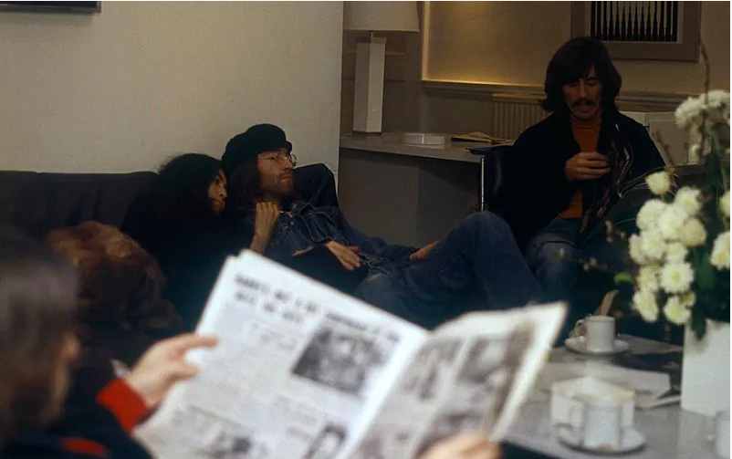

Abbey Road is the eleventh studio album by the English rock band the Beatles, released on 26 September 1969. It is the last album the group recorded, although Let It Be was the last album completed before the band's break-up in April 1970. It was mostly recorded in April, July, and August 1969, and reached number one in both the US and the United Kingdom. A double A-side single from the album, "Something" / "Come Together", was released in October, which also topped the charts in the US. Abbey Road incorporates styles such as rock, pop, blues, singer-songwriter, and progressive rock, and makes prominent use of the Moog synthesizer and guitar played through a Leslie speaker unit. It is also notable for having a long medley of songs on side two that have subsequently been covered as one suite by other notable artists. The album was recorded in a more collegial atmosphere than the Get Back / Let It Be sessions earlier in the year, but there were still significant confrontations within the band, particularly over Paul McCartney's song "Maxwell's Silver Hammer", and John Lennon did not perform on several tracks. By the time the album was released, Lennon had left the group, though this was not publicly announced until McCartney also quit the following year. Although it was an immediate commercial success, it received mixed reviews. Some critics found its music inauthentic and criticised the production's artificial effects. By contrast, critics today view the album as one of the Beatles' best and rank it as one of the greatest albums of all time. George Harrison's two songs on the album, "Something" and "Here Comes the Sun", have been regarded as among the best he wrote for the group. The album's cover, featuring the group walking across a zebra crossing outside Abbey Road Studios, has become one of the most famous and imitated in the history of recorded music.


After the recording sessions for the proposed Get Back album, Paul McCartney suggested to music producer George Martin that the group get together and make an album "the way we used to do it", free of the conflict that had begun during sessions for The Beatles (also known as the "White Album"). Martin agreed, but on the strict condition that all the group—particularly John Lennon—allow him to produce the record in the same manner as earlier albums and that discipline would be adhered to. No one was entirely sure that the work was going to be the group's last, though George Harrison later recalled that "it felt as if we were reaching the end of the line".
The first sessions for Abbey Road began on 22 February 1969, only three weeks after the Get Back sessions, in Trident Studios. There, the group recorded a backing track for "I Want You (She's So Heavy)" with Billy Preston accompanying them on Hammond organ. No further group recording occurred until April because of Ringo Starr's commitments on the film The Magic Christian. After a small amount of work that month and a session for "You Never Give Me Your Money" on 6 May, the group took an eight-week break before recommencing on 2 July. Recording continued through July and August, and the last backing track, for "Because", was taped on 1 August. Overdubs continued through the month, with the final sequencing of the album coming together on 20 August – the last time all four Beatles were present in a studio together.

McCartney, Starr and Martin have reported positive recollections of the sessions, while Harrison said, "we did actually perform like musicians again". Lennon and McCartney had enjoyed working together on the non-album single "The Ballad of John and Yoko" in April, sharing friendly banter between takes, and some of this camaraderie carried over to the Abbey Road sessions. Nevertheless, there was a significant amount of tension in the group. According to Ian MacDonald, McCartney had an acrimonious argument with Lennon during the sessions. Lennon's wife Yoko Ono had become a permanent presence at Beatles recordings, and clashed with other members. Halfway through recording in June, Lennon and Ono were involved in a car accident. A doctor told Ono to rest in bed, so Lennon had one installed in the studio so she could observe the recording process from there.
During the sessions, Lennon expressed a desire to have all of his songs on one side of the album, and McCartney's on the other. The album's two halves represented a compromise: Lennon wanted a traditional release with distinct and unrelated songs, while McCartney and Martin wanted to continue their thematic approach from Sgt. Pepper's Lonely Hearts Club Band by incorporating a medley. Lennon ultimately said that he disliked Abbey Roadas a whole and felt that it lacked authenticity, calling McCartney's contributions "[music] for the grannies to dig" and not "real songs", and describing the medley as "junk ... just bits of songs thrown together".
| Abbey Road Album Production Staff | |||
|---|---|---|---|
| George Martin | Producer | ||
| Geoff Emerick | Sound Engineer | ||
| Alan Parsons | Assistant Sound Engineer | ||
| John Kurlander | Assistant Sound Engineer |
Abbey Road was recorded on eight-track reel-to-reel tape machines rather than the four-track machines that were used for earlier Beatles albums such as Sgt Pepper, and was the first Beatles album not to be issued in mono. The album makes prominent use of guitar played through a Leslie speaker, and of the Moog synthesizer. The Moog is not merely used as a background effect but sometimes plays a central role, as in "Because", where it is used for the middle eight. It is also prominent on "Maxwell's Silver Hammer" and "Here Comes the Sun". The synthesizer was introduced to the band by Harrison, who acquired one in November 1968 and used it to create his album Electronic Sound. Starr made more prominent use of the tom-toms on Abbey Road, later saying the album was "tom-tom madness ... I went nuts on the toms." Abbey Road was also the first and only Beatles album to be entirely recorded through a solid-state transistor mixing desk, the TG12345 Mk I, as opposed to earlier tube (thermionic valve)-based REDD desks. The TG console also allowed better support for eight-track recording, facilitating the Beatles' considerable use of overdubbing. Emerick recalls that the TG desk used to record the album had individual limiters and compressors on each audio channel and noted that the overall sound was "softer" than the earlier tube (valve) desks. In his study of the role of the TG12345 in the Beatles' sound on Abbey Road, music historian Kenneth Womack observes that "the expansive sound palette and mixing capabilities of the TG12345 enabled George Martin and Geoff Emerick to imbue the Beatles' sound with greater definition and clarity. The warmth of solid-state recording also afforded their music with brighter tonalities and a deeper low end that distinguished Abbey Road from the rest of their corpus, providing listeners with an abiding sense that the Beatles' final long-player was markedly different." Alan Parsons worked as an assistant engineer on the album. He later went on to engineer Pink Floyd's landmark album The Dark Side of the Moon and produce many popular albums himself with the Alan Parsons Project. John Kurlander also assisted on many of the sessions, and went on to become a successful engineer and producer, most noteworthy for his success on the scores for the Lord of the Rings film trilogy.
In mid-1969, Lennon formed a new group, the Plastic Ono Band, in part because the Beatles had rejected his song "Cold Turkey". While Harrison worked with such artists as Leon Russell, Doris Troy, Preston and Delaney & Bonnie through to the end of the year, McCartney took a hiatus from the group after his daughter Mary was born on 28 August. On 20 September, six days before Abbey Road was released, Lennon told McCartney, Starr, and business manager Allen Klein (Harrison was not present) that he "wanted a divorce" from the group. Apple released "Something" backed with "Come Together" in the US on 6 October 1969. Release of the single in the UK followed on 31 October, while Lennon released the Plastic Ono Band's "Cold Turkey" the same month. The Beatles did little promotion of Abbey Road directly, and no public announcement was made of the band's split until McCartney announced he was leaving the group in April 1970. By this time, the Get Back project (by now retitled Let It Be) had been re-examined, with overdubs and mixing sessions continuing into 1970. Therefore, Let It Be became the last album to be finished and released by the Beatles, although its recording had begun before Abbey Road. Abbey Road sold four million copies in its first two months of release. In the UK, the album debuted at number one, where it remained for 11 weeks before being displaced for one week by the Rolling Stones' Let It Bleed. The following week (which was Christmas), Abbey Road returned to the top for another six weeks (completing a total of 17 weeks) before being replaced by Led Zeppelin II. Altogether, it spent 81 weeks on the UK albums chart. Reaction overseas was similar. In the US, the album spent 11 weeks at number one on the Billboard Top LPs chart. It was the National Association of Recording Merchandisers (NARM) best-selling album of 1969. In Japan, it was one of the longest-charting albums to date, remaining in the top 100 for 298 weeks during the 1970s. [from Wikipedia]

Abbey Road Lyrics and Tracklist
Abbey Road Studios Live Webcam
The Beatles (Official Website)
John Lennon (Official Website)
Paul McCartney (Official Website)